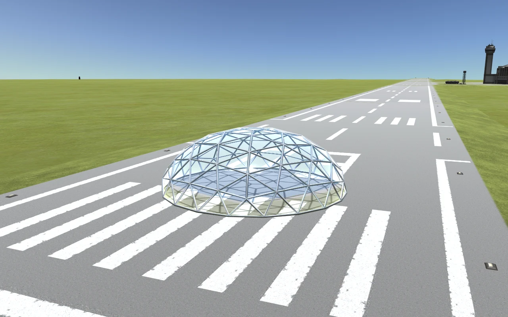
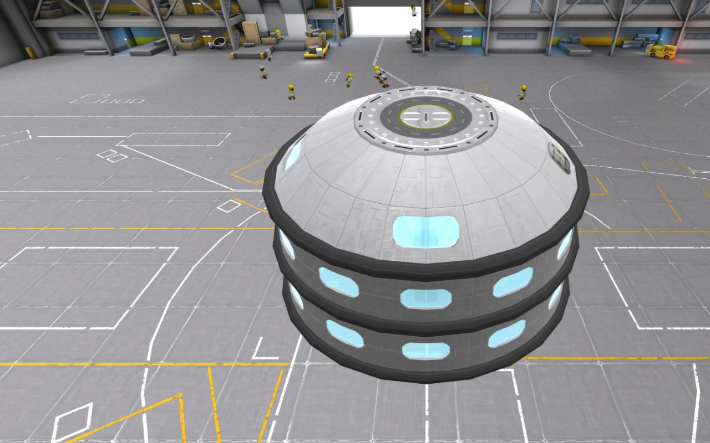
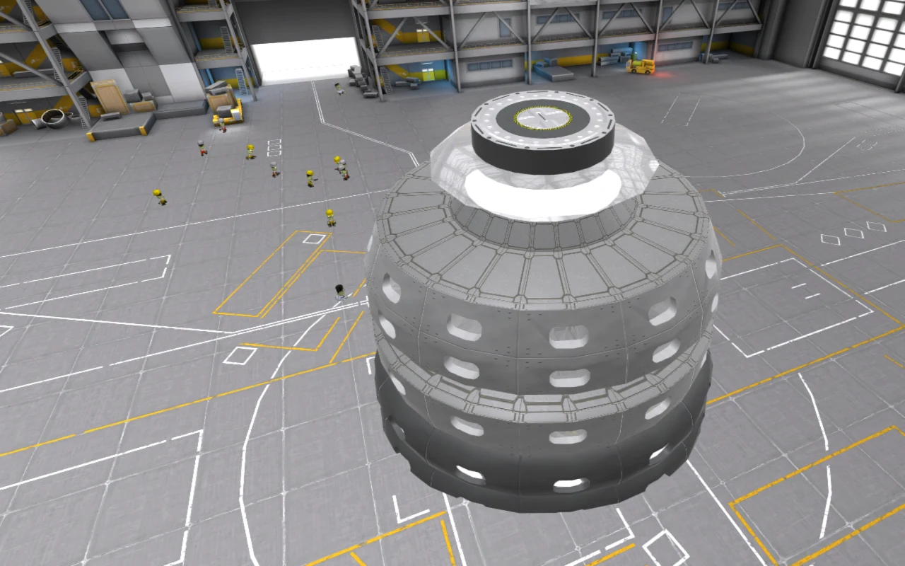

← Back to supported mods
Parts
Biosphere Containment Dome
Biosphere Containment Dome (Large)
Biosphere Containment Dome (Wide)


Civilian Contractor Dock Mk1
Civilian Large Apartment Complex
Civilian Large House mk2
Civilian Small Apartment Complex


Netherdyne Flight School
Netherdyne University
